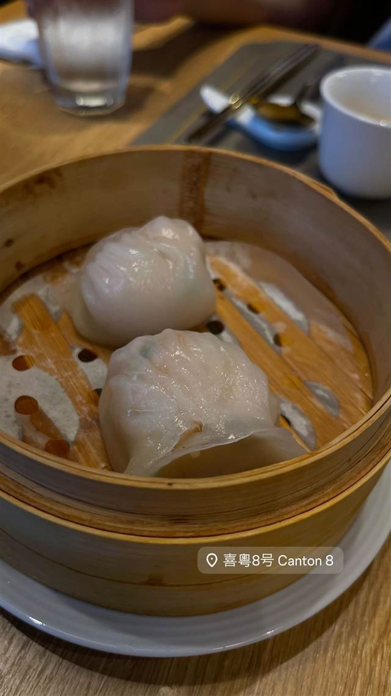

喜粵8號 Canton 8 (澳門Rio Hotel店)
ミシュラン二つ星の上海姉妹店と同じ味の海老餃子点心
喜粤8号 Canton 8
マカオのRio Hotel3階にある広東料理・点心の店。上海の系列店がミシュラン二つ星を獲得しており、福臨門で修行した簡捷明氏が腕を振るう。手頃な価格で本格点心を楽しめると評判。
TRIVIA
へえ、という話
- 姉妹店の上海店がミシュラン二つ星を獲得している
| 系譜 | 上海に構える系列店がミシュランガイド上海版で二つ星を獲得しており、その流れを汲む店とされる |
|---|---|
| 看板 | 点心（海老餃子など）、龍蝦炒飯、帯子餃、核桃包、脆皮燒雞 |
| 掲載・受賞 | 手頃な価格で本格的な広東料理・点心を提供する店として知られ、「世界一リーズナブルなミシュラン星付き店」と評されることもある |
| 場所 | 港澳碼頭(Macau Ferry Terminal)付近 澳門羅理基博士大馬路33號 Rio Hotel 3樓 (Rua de Luis Gonzaga Gomes No. 33, 3/F Rio Hotel, Macau) |
| 注意 | マカオ・利澳酒店（Rio Hotel）3階に位置 |
食べたもの：点心・海老餃子